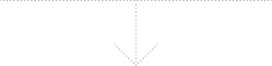
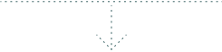
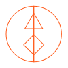

Pensamiento estratégico y creativo
Estudiamos a fondo cada mercado y cada necesidad. La investigación y el análisis del ‘customer journey’ es básico y lo hacemos siempre desde la creatividad y la eficacia.


Estudiamos a fondo cada mercado y cada necesidad. La investigación y el análisis del ‘customer journey’ es básico y lo hacemos siempre desde la creatividad y la eficacia.


En un mundo lleno de ruido, contenidos y estímulos, la brillantez es pura autoexigencia.

Es un entorno dinámico. Conocemos todas las novedades y no olvidamos lo tradicional. Priorizamos según cada necesidad.
Nos gusta cumplir nuestras promesas. Medimos todas nuestras acciones y hacermos seguimiento para acompañar al cliente en su camino.